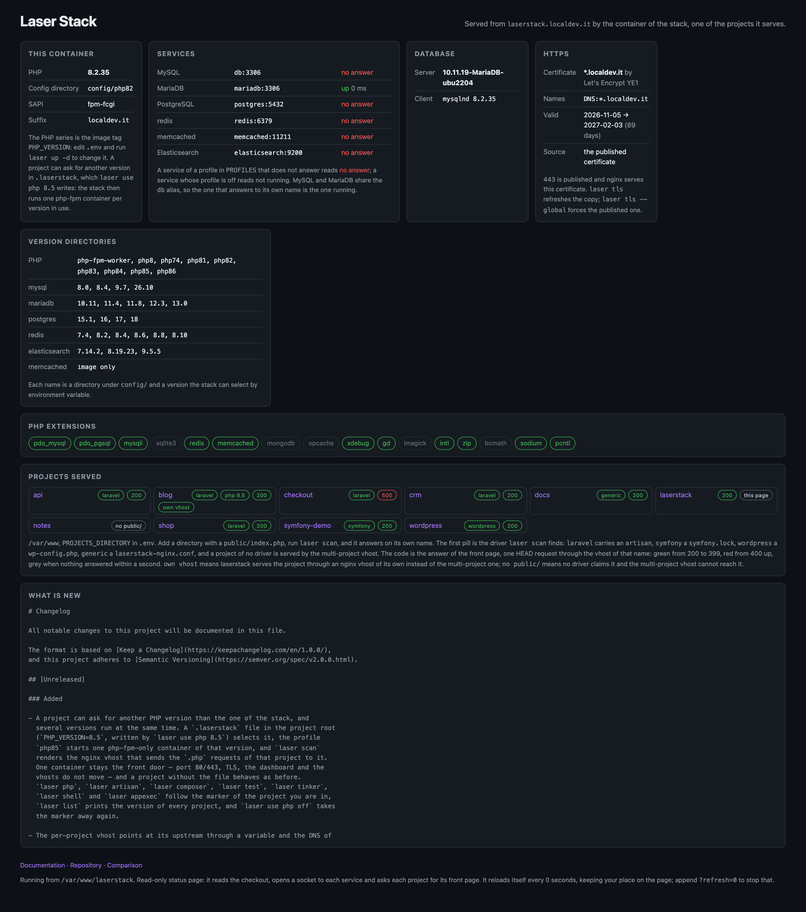

Features
Small by design, not by accident.
Every feature below exists to keep one thing true: a directory full of projects served by a handful of small containers you can explain in a minute.
https, out of the box, with a certificate that is already trusted
On by default: laser up provisions the certificate when this stack has never had one, and every project answers on 443 as well as on 80. With the default suffix laser tls downloads the wildcard certificate of *.localdev.it from localdev.it/laserstack/tls/, renewed and republished by the project itself: every browser trusts it already, macOS, Linux and the Windows browser of a WSL user, so no machine trusts anything and no warning page appears. Its private key is public by design, as with local-ip.co and traefik.me, so the padlock proves nothing about who answers — the name resolves to 127.0.0.1.
A secure context is not a detail: service workers, Secure cookies, SameSite=None, navigator.clipboard, WebAuthn and camera or microphone permissions all require one, and projecta.localdev.it is not localhost. OAuth and payment callbacks that demand an https redirect URI work here without a tunnel, and no tool needs -k.
With a suffix of your own, no public certificate can cover it, so the stack becomes its own authority: laser tls creates a CA in config/tls/ca and a certificate that names every project, and laser trust puts the CA where the platform reads it — the system keychain on macOS, update-ca-certificates or update-ca-trust on Linux, and the Windows user store from WSL, where the browser of a WSL user actually reads it. laser trust --remove takes it out, and one CA per machine covers every suffix.
Many projects at once
Laser Stack mounts one directory — PROJECTS_DIRECTORY, the directory that holds your checkouts — into a single app container at /var/www. Every subdirectory with a public/ directory becomes a site:
laser scanlooks at each project and asks the drivers what it is. The Laravel, Symfony, WordPress and generic drivers are inlibs/;- each project gets one nginx vhost, watching for
project.SUFFIXand serving that project'spublic/directory; - any project can ship its own vhost: put a
laserstack-nginx.confin the project root and the generic driver installs it asproject.conf; - the default vhost (the multi-project one) belongs to the image, so two projects cannot fight over
listen 80 default_server; laser scanhashes the vhosts of the container before and after, so it restarts nginx only when something really changed.
Adding a project is laser scan. Removing one is laser scan. Nothing is generated into your checkout.
The whole stack
One service per container, each behind a compose profile, so PROFILES decides what runs:
| profile | container | purpose | host port |
|---|---|---|---|
app (always) | laserstack/app:<PHP_VERSION> | nginx, php-fpm, your tools (composer, node, npm, yarn, phpunit, xdebug, mysql/psql clients) | 80 |
mysql | mysql:<MYSQL_VERSION> | database, service name db | 3306 |
mariadb | mariadb:<MARIADB_VERSION> | database, service name mariadb and alias db | 3306 |
postgres | postgres:<POSTGRES_VERSION>-alpine | database, service name postgres | 5432 |
redis | redis:<REDIS_VERSION>-alpine | cache, queue, sessions | 6379 |
memcached | memcached:<MEMCACHED_VERSION>-alpine | cache, sessions | 11211 |
elasticsearch | elasticsearch:<ELASTICSEARCH_VERSION> | search, single node, security off for local use | 9200 |
Only the profile of the mysql container answers on 3306 at a time: projects that point at db work with the mysql profile and with the mariadb profile, which is why the mariadb service carries that alias.
Always up to date
The app images are built in the open and rebuilt every night by a scheduled workflow in laserstack_app (01:00 UTC, plus a manual run). For every PHP series that workflow builds, it installs the series from the Alpine release of that image and reads back the version it got, so laserstack/app:8.4 always carries the newest PHP 8.4 patch available. Each build publishes two tags: the series (8.4) and the exact version (8.4.27), for amd64 and arm64, with latest on the newest released series. You can watch it in the registry: while the 8.6 line tracked a release candidate, its tags were rebuilt on consecutive days.
laser update is the other half of that promise — one command, and a --check that changes nothing:
$ laser update --check # or: laser update, to apply it
-- the checkout
## master...origin/master
-- the images of the active profiles
Image mariadb:10.11 Pulled
Image laserstack/app:8.2 Pulled
-- the app image
laserstack/app:8.2 carries PHP 8.2.35
the app container runs PHP 8.2.35
-- check only, nothing restartedWith laser update the same command continues: it pulls the newest code of the checkout and the newest images of the active profiles, and restarts what changed. When the pulled image differs from the running one, docker-compose recreates that container and the last line reports the version that is now running — applied patches, no guessing.
One thing stays manual, on purpose: a new PHP series. The nightly build covers every series that has a directory in laserstack_app, and a new one is a directory there plus the config directory here (config/php<VV> and config/supervisord.<VV>) — one entry each, with the recipe in CONTRIBUTING.md.
Platforms
Official support for the three environments developers use, with any docker that speaks compose v2 — and nothing at all installed on the host besides it:
| system | what it needs | notes |
|---|---|---|
| macOS | Docker Desktop, OrbStack or Colima | Intel and Apple silicon; the measurements on this site come from an M3 with OrbStack |
| Linux | docker engine with the compose v2 plugin | no desktop app, no VM |
| WSL2 / WSLg | Docker Desktop with the WSL2 backend | keep the projects inside the Linux filesystem (~/src), not under /mnt/c: bind mounts and file watching stay fast |
No VM of its own, no system package, no shell profile, no daemon: laser is a bash script and docker does the rest. The installer checks bash, git and docker with compose v2 before it clones anything, and stops with a clear message when one of them is missing.
Project names without a DNS server
The default SUFFIX is localdev.it, a domain that resolves to loopback, so no project name needs any local setup at all. It is public: every name under it — any depth, IPv4 and IPv6 — answers 127.0.0.1 and ::1.
# .env — the default, no setup needed
SUFFIX=localdev.it
# every project of the projects directory then answers to
http://projecta.localdev.it http://myapp.localdev.it http://clientportal.localdev.itThat means no /etc/hosts line, no dnsmasq, no Acrylic DNS, nothing installed: the names resolve for anyone, anywhere, and on the machine that runs the stack they land on the stack. The notes behind the domain are at localdev.it/catch-all-dns.html.
A suffix of your own still needs the hosts lines — or the DNS work that is on the roadmap.
Versions are variables
One variable per engine selects the image tag and the config directory, so the settings of a version travel with it. As of release 0.13.2:
| engine | variable | default | other versions | config directory |
|---|---|---|---|---|
| PHP | PHP_VERSION | 8.4 | 7.4, 8.0–8.3, 8.5, 8.6 | config/php<VV>/, config/supervisord.<VV>/ |
| MySQL | MYSQL_VERSION | 8.0 | 8.4, 9.7, 26.10 | config/mysql/<version>/ |
| MariaDB | MARIADB_VERSION | 10.11 | 11.4, 11.8, 12.3, 13.0 | config/mariadb/<version>/laserstack.cnf |
| PostgreSQL | POSTGRES_VERSION | 15.1 | 16, 17, 18 | config/postgres/<version>/ |
| redis | REDIS_VERSION | 8.10 | 8.8, 8.6, 8.4, 8.2, 7.4 | config/redis/<version>/redis.conf |
| memcached | MEMCACHED_VERSION | 1.6 | — | none, the image takes flags |
| Elasticsearch | ELASTICSEARCH_VERSION | 7.14.2 | 8.19.23, 9.5.5 | config/elasticsearch/<version>/elasticsearch.yml |
The defaults are the versions the previous release ran, so an existing .env keeps behaving the same. A version that is not in the list gives you docker's own error about a missing path — there is no validation layer to fight with.
Config you can read, commit and diff
The container config is not baked into the images. It lives in this repository, one directory per version:
config/
php82/ php.ini, php-fpm.conf, php-fpm.d/www.conf
supervisord.8.2/ supervisord.conf (nginx + php-fpm in the app container)
nginx/ nginx.conf and the vhosts of the app container
my.cnf the client config of a shell in the app container
mysql/8.0/ docker.cnf, mysql.cnf, mysqld.cnf
mariadb/10.11/ laserstack.cnf
postgres/15.1/ postgresql.conf
redis/8.10/ redis.conf
elasticsearch/7.14.2/ elasticsearch.ymlChange a value, restart one service (laser restartnginx, laser stop db && laser up -d db), review the change in a pull request. Your team gets the same php.ini and the same database settings because they are in the repository, not in somebody's Docker Desktop.
A dashboard, served like any project
The checkout is one of the projects of the projects directory, so the stack serves a dashboard for itself on laserstack.<SUFFIX>. The multi-project vhost serves any public/index.php, so no second vhost and no second container are involved: the page is there as soon as laser up -d runs, and laser dashboard opens it in your browser.
PHP 8.2.35 config/php82 suffix mac sapi fpm-fcgi
services MySQL not running MariaDB mariadb:3306 up 1 ms
PostgreSQL no answer redis not running
projects served 30days laravel app own vhost 200 blog no public/
laserstack this page 200 symfony-demo symfony 200
versions PHP 7.4-8.6, mysql 8.0-26.10, mariadb 10.11-13.0, redis 7.4-8.10
https *.localdev.it by Let's Encrypt YE1, 89 days left, the published certificateIt is read-only and it answers from inside the container: the PHP series it runs on, the projects of the projects directory — each with the driver laser scan found, whether laserstack serves it through a vhost of its own and the code its front page answered with — one socket test per service of the active profiles, the server version of the database, the version directories of config/, the extensions of the image and the head of the CHANGELOG. It writes nothing, runs no command, prints no credential and asks each project for its front page.

A whole page, read-only, with no credential in it. One card per question, and the newest is the certificate: HTTPS=on (the default), the issuer, the names it covers, the validity window with the days left, and whether that copy is the published certificate or the CA of the machine. It reads the certificate and never the key.
The laser CLI
One shell script is the whole interface. It copies env.example to .env on first use, reads it, and then:
| command | what it does |
|---|---|
laser up / stop / down / ps / logs | the docker-compose commands you expect, with the profiles of .env applied |
laser scan | writes one nginx vhost per project and restarts nginx when something changed |
laser artisan <cmd> | runs artisan in the project of the current directory |
laser composer / npm / node / npx / yarn / php / test / tinker | the same for the other project tools |
laser shell | a bash in the app container, in that project |
laser appexec <cmd> | any command in the app container (from the repository root: the container itself) |
laser mysql / laser psql | a client for the database of the profile, with the credentials of .env |
laser dashboard | opens the dashboard of the stack in the browser of the machine, over https when HTTPS=on |
laser share | an ngrok tunnel to that project |
laser new / list / stats / restartnginx | scaffold a project, list the served URLs, docker stats, reload nginx |
laser update | pulls the newest code and the newest images and restarts only what changed; laser update --check stops after the download |
| anything else | passed straight to docker-compose: laser exec db mysqladmin status |
Tested on every version
test/smoke.sh is part of the repository, and it starts the stack for real:
- app stage, per PHP version: nginx and php-fpm reach RUNNING, no nginx emergency in the log, the workers run as the
laseruser, PHP loads the php.ini of the repository, a project answers over HTTP with the requested version, the dashboard answers onlaserstack.<SUFFIX>and lists the projects directory, and the run writes nothing into the repository's nginx config directory; - database stage, per profile:
laser mysqlorlaser psqlanswers with the server of the profile, and PDO from the app container reaches that server under the host name a project uses.
A version variable drives it: SMOKE_MYSQL_VERSION=9.7 SMOKE_DB_PROFILES=mysql test/smoke.sh 8.5. The 0.13.0 release was verified that way for mysql 8.0/8.4/9.7/26.10, mariadb 10.11–13.0, postgres 15.1–18, redis 7.4–8.10, memcached 1.6 and elasticsearch 7.14.2/8.19.23/9.5.5, plus a Laravel 12 application reaching every engine through artisan; 0.14.0 was verified on PHP 8.4 with mysql 8.0, mariadb 10.11 and postgres 15.1, and the test now asserts that a project answers over https with a trusted certificate.artisan.
Design decisions we do not apologise for
- Do not protect you from docker. If you ask the stack to do something while it is down, you get docker's error, not a stack trace of laser's own invention.
- One shell script, no daemon.
laseris a bash script you can read end to end; docker-compose does the orchestration. - Few containers, small images. Alpine where possible, public images for the services, and one image per PHP series rather than one per project.
- nginx serves the projects, and it is the same nginx for all of them.
- Your files stay yours. Projects are bind-mounted; the only things written back into a project are the vhosts inside the container, not into your checkout.